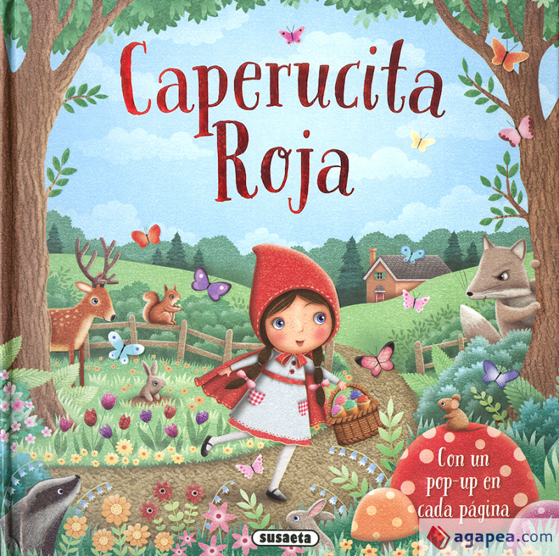

Caperucita Roja
Autor: Charles Perrault.
Los personajes Caperucita Roja y el Lobo Feroz aparecen en el tercer acto del ballet La Bella Durmiente de Chaikovski, en la coreografia creada por Marius Petipa para los Teatros Imperiales de San Petersburgo. Ademas, las adaptaciones del cuento han sido multiples, desde el teatro al cine —existen versiones de terror y alguna gotica—, los comics, los videojuegos... Por otra parte, el cuento de Caperucita Roja, en la version moralizante de Charles Perrault, ha sido distorsionado o reinterpretado muchas veces en libros, peliculas y dibujos animados.
